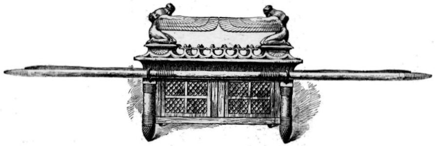

Éxodo 37 — La Traducción Mister

⚠ A diferencia de las escenas narrativas habituales de Tissot en gouache, este es un simple dibujo de reconstrucción —sin campamento, sin adorador, sin Bezalel, solo el objeto mismo, representado como lo esbozaría un lector cuidadoso de este capítulo siguiendo las medidas versículo por versículo: la caja, los anillos, las varas que nunca se sacan, y los dos querubines encarándose exactamente como describe el v9, alas extendidas hacia arriba, rostros inclinados hacia la cubierta entre ellos.
La sencillez es su propia forma de honestidad. Nada aquí intenta adivinar lo que el texto no dice —ninguna joya, ningún ornamento más allá de lo que los vv1–9 realmente enumeran. Es casi la manera menos imaginativa posible de dibujar este objeto, lo cual es exactamente lo que lo hace un compañero útil para un capítulo construido enteramente de medidas.
{kind=link}
Un nombre, una vez, y luego veintiocho versículos de «hizo»
«Bezalel hizo el arca» (v1) es la única vez que este capítulo nombra a su artesano —cada versículo después de este simplemente dice «hizo», sin nombre pero entendido, hasta su cierre. El capítulo anterior atribuyó la estructura exterior de la tienda a todo un equipo, «todo hombre sabio de corazón» (Éxodo 36:1–2, ya en estas páginas). Aquí, para el mobiliario más interior y más sagrado —el arca, la cubierta, los querubines, la mesa, el candelabro, el altar del incienso—, el texto se estrecha a un solo hombre, nombrado una vez y luego simplemente asumido para el resto del capítulo.
La cubierta y sus querubines se construyen exactamente como se prometió (Éxodo 25:17–22, ya en estas páginas, con su propia nota sobre el contraste con los querubines guardianes del Edén); este capítulo no añade nada a esa teología y no necesita hacerlo —todo su propósito es simplemente reportar que la promesa se ha vuelto un objeto, alas extendidas, rostros inclinados el uno hacia el otro sobre el oro que Bezalel personalmente forjó a martillo.
⚠ El versículo 8 lleva un ketiv/qere en la palabra para «sus dos extremos» —Mechon-Mamre imprime la forma escrita sin puntuar junto a la puntuada según la cual se lee, una variante puramente ortográfica sin cambio de significado— conservada aquí tal como se recibió, una nota ordinaria de escriba que emerge en medio de un objeto extraordinario.
Una mesa construida para ser cargada, nunca para ser admirada
Cada medida aquí repite Éxodo 25:23–30, ya en estas páginas, y cada utensilio —platos, cucharas, tazónes, jarras para verter— está hecho, como el arca, de oro sólido. ⚠ Lo que la repetición hace visible de nuevo es cuánto del diseño trata sobre el MOVIMIENTO en vez de la exhibición: un reborde para evitar que las cosas se resbalen en tránsito, anillos colocados «cerca del reborde» específicamente para que las varas queden altas y estables, varas que nunca se sacan. Este es mobiliario diseñado para un pueblo que, en cada punto de este libro hasta ahora, está a punto de moverse de nuevo.
Una lámpara forjada de un solo bloque de oro, exactamente como se prometió
«Todo él era una sola obra labrada a martillo de oro puro» (v22) repite, casi palabra por palabra, la misma afirmación hecha tres veces sobre este mismo objeto siete capítulos antes (Éxodo 25:31–36, ya en estas páginas, cuya propia nota rastrea la extraña vida posterior de este candelabro en la visión nocturna de Zacarías). Sin soldadura, sin uniones, sin piezas separadas encajadas después —base, fuste, seis brazos, y cada copa en forma de almendra forjados de una sola masa de oro. El texto no explica cómo; simplemente repite la afirmación hasta que el lector tiene que tomarla como una declaración sobre el significado del objeto, no solo sobre su fabricación.
Un altar fuera de orden, y la única receta medida por el olfato, no por la regla
El altar del incienso pertenece, en cuanto a instrucción, a un capítulo mucho posterior (Éxodo 30:1–10, ya en estas páginas) —pero aquí se construye junto al arca, la mesa, y el candelabro, no junto al altar de bronce exterior a cuyo nombre más se parece. El capítulo agrupa su mobiliario por DÓNDE está cada pieza, dentro de la tienda o fuera de ella, en vez de por el orden en que se dieron originalmente las instrucciones. Los objetos de oro para el cuarto interior se construyen juntos; el altar de bronce para el atrio espera su propio capítulo.
⚠ Sus cuernos son «de una sola pieza con él» (v25), la frase idéntica ya usada de los cuernos del propio altar de bronce (Éxodo 27:2, ya en estas páginas) —dos altares, uno de oro y uno de bronce, uno dentro y uno fuera, construidos bajo la misma regla. El capítulo cierra con el aceite de la santa unción y el incienso, «obra de un perfumista» (v29) —la única lista de ingredientes en todo este relato que no se puede medir en codos, hecha por olfato y proporción en vez de por una regla.
Notas sobre esta traducción
Decisiones. «Cubierta» mantenido para kapporet (v6) en vez de «propiciatorio», igualando la propia elección anterior de esta traducción en Éxodo 25:17. «Sus platos, y sus cucharas, y sus tazónes, y sus jarras con las que verter ofrendas» sigue la línea de la NIV/NASB en inglés para la disputada lista de utensilios del v16 —véase la nota anterior para la verdadera bifurcación en el estante. «Obra labrada a martillo» mantenido literal para miqshah (vv7, 17, 22), igualando la propia elección anterior de esta traducción en Éxodo 25. Los cuatro espacios de párrafo del capítulo ({פ} en v9, {פ} en v16, {פ} en v24, {ס} en v29) marcan la costura después de cada objeto terminado: el arca, la mesa, el candelabro, el altar y el aceite. La numeración de versículos sigue exactamente el hebreo; el hebreo y el español de Éxodo 37 corren igual, 1–29.
Una nota sobre el orden: Éxodo está en estas páginas en los capítulos 1–40 —el mobiliario más interior del tabernáculo ahora construido por las propias manos de Bezalel, nombrado una vez y luego simplemente asumido: el arca y sus querubines, la mesa, el candelabro de oro sólido, y el altar del incienso con su aceite de unción. Éxodo 38, el altar de bronce y el atrio construidos por fin, y Éxodo 39, las vestiduras sacerdotales por fin cosidas, ya están en estas páginas también. Éxodo 40 —el tabernáculo levantado y la gloria de Jehová llenándolo, el último capítulo del propio libro— ya está también en estas páginas. Éxodo queda completo aquí, los cuarenta capítulos; la historia continúa en Levítico, ya comenzado en estas páginas.